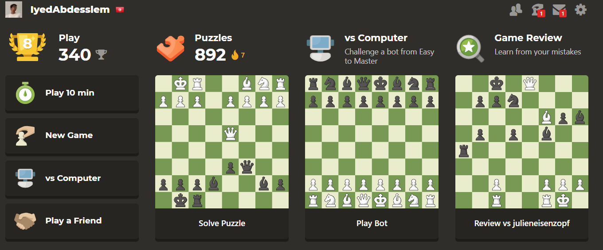
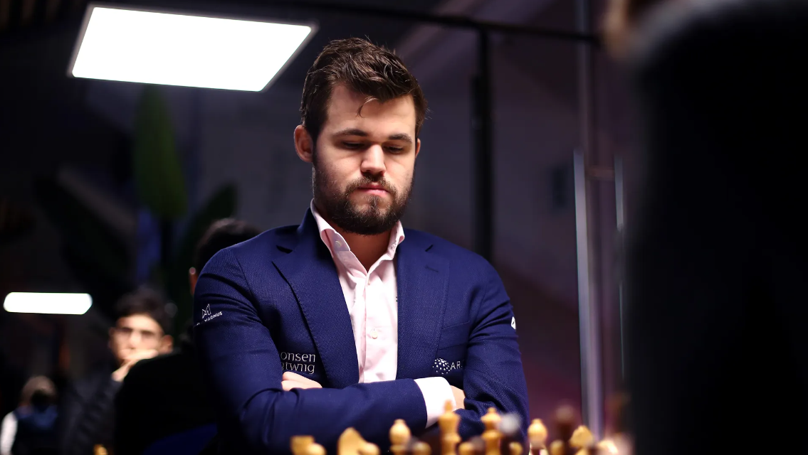
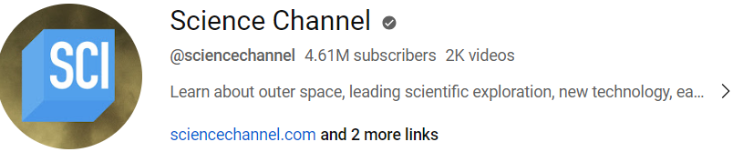
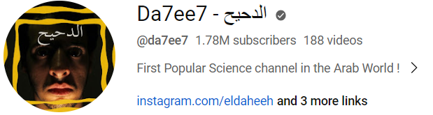
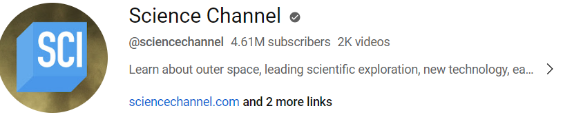
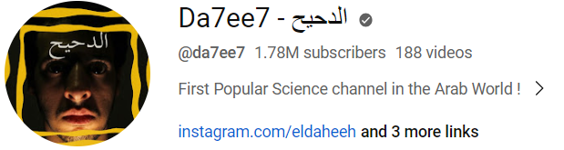
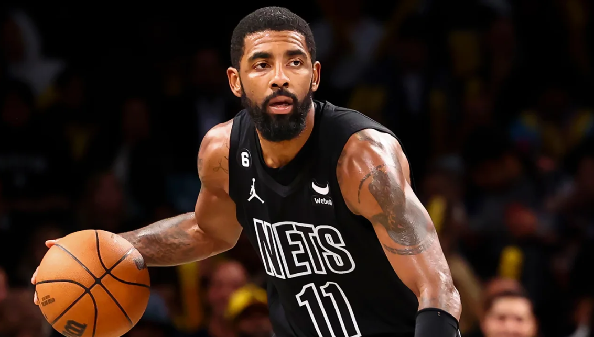

About Me
| skills | experience | education |
|---|---|---|
|
|
not yet but i aim to achieve some of this experiences
|
|
Passions
Hey there! I'm just your average iyed, navigating life one day at a time. I've always believed that life is a grand adventure, and I try to make the most of it by diving headfirst into my passions. So, let me take you on a quick tour of the things that truly light up my world!
| CHESS | ASTRONOMY | BASKETBALL |
Chess is more than just a game to me; it's a lifelong passion that has shaped the way I think and approach challenges. There's something incredibly captivating about the intricate dance of the pieces on the board and the strategic depth that unfolds with each move. From the thrill of executing a well-planned combination to the introspection it fosters, chess has been a constant companion in my life. Whether I'm engrossed in a heated match, analyzing classic games, or teaching others to appreciate its beauty, the world of chess is where I find both solace and exhilaration. It's not just about winning; it's about the journey of self-improvement, and the friendships forged over a chessboard that make this ancient game an enduring love of mine  play with IYEDWhen it comes to chess, my ultimate idol has to be Magnus Carlsen. His unparalleled mastery of the game and his unique approach to chess have captivated me from the very beginning. Magnus's ability to see beyond the board, to think several moves ahead, and to adapt to any situation is nothing short of astonishing. His reign as World Chess Champion has been marked by an incredible consistency, and he has revolutionized the way chess is played and enjoyed by millions around the world.  |
I would like to express my heartfelt gratitude to a . multitude of channels and sources that have significantly expanded my knowledge of astronomy. From the captivating documentaries on channels like National Geographic and the Discovery Channel to the insightful videos by creators on platforms like YouTube, I have been enthralled by the mysteries of the cosmos. The informative articles and discussions on websites such as NASA's official page and Astronomy Magazine have been instrumental in deepening my understanding of celestial phenomena. Additionally, the engaging podcasts like "StartUp Podcast" and "Astronomy Cast" have provided me with hours of enlightenment and entertainment. My appreciation also extends to the countless books and research papers authored by astronomers and astrophysicists, which have been invaluable in my pursuit of astronomical knowledge. I am profoundly thankful for the diverse and enriching sources that have broadened my horizons in the fascinating realm of astronomy  



|
Basketball is not just a sport; it's my passion, my daily ritual. From the exhilarating squeak of sneakers on the hardwood to the rhythmic bounce of the ball, every aspect of the game fuels my soul. Each day, I eagerly embrace the opportunity to hit the court, perfecting my dribbling, shooting, and teamwork skills. Whether I'm sinking a three-pointer or hustling on defense, the court is where I find my true self, where I push my limits, and where my passion for basketball grows stronger with every practice. It's more than a game; it's a way of life. Kyrie Irving is not just a basketball player; he's a source of inspiration and admiration in my life. His incredible ball-handling skills, unmatched creativity on the court, and clutch performances have left an indelible mark on my basketball journey. Kyrie's passion for the game, his dedication to perfecting his craft, and his fearless approach to challenges resonate deeply with me. He's more than just a star player; he's a role model who reminds me to always push the boundaries of what's possible. Kyrie Irving isn't just an athlete; he's a symbol of perseverance, excellence, and the boundless potential within all of us. |
|---|